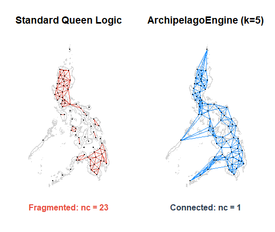

ArchipelagoEngine
Standard spatial contiguity models often leave significant portions of island nations mathematically isolated. In the Philippine context, standard Queen logic leaves 16 provinces (approx. 20%) orphaned, resulting in a fragmented network with only 80.2% connectivity. This fragmentation introduces systematic predictive bias and significant residual spatial autocorrelation (e.g., Moran's I=0.024, p<0.05 for 'palay' price in the Philippines).
ArchipelagoEngine implements specialized K-Nearest Neighbor (KNN) logic to bridge these fragmented maritime networks. By enforcing a unified grid (optimized at k=5 using the Philippines as case study), the engine achieves 100% network connectivity and neutralizes spatial bias, enabling robust econometric inference.
Key Features

Figure 1: Standard Queen Logic (Left) vs. ArchipelagoEngine k=5 (Right)
- 100% Connectivity: Ensures no island units are mathematically "orphaned."
- Bias Neutralization: Reduces Moran’s I to approximately 0 (p > 0.10) to stabilize spatial spillovers.
- Structural Robustness: Prioritizes structural integrity over superficial model fit.
- CRAN Verified: Compatible with
sfandspdep.
Installation
install.packages("ArchipelagoEngine")Quick Start
The core function, build_archipelago_weight, bridges fragmented networks using optimized KNN logic.
library(ArchipelagoEngine)
library(sf)
library(spdep)
# Load the benchmark map.
data(raw_data)
# Calculate the new network based on the k=5 logic.
weights <- build_archipelago_weight(raw_data, k = 5)
# Verify 100% connectivity.
connectivity_status <- spdep::n.comp.nb(weights$neighbours)$nc
print(connectivity_status)
# Plot connectivity
plot(st_geometry(raw_data), border = "lightgrey")
plot(weights$neighbours, st_coordinates(st_centroid(raw_data)),
add = TRUE, col = "#1E90FF", pch = 19, cex = 0.5, lwd = 0.7)
# Result status
mtext(paste("Status: 100% Connectivity Achieved (nc =", connectivity_status, ")"),
side = 1, line = 1, adj = 0.5, cex = 0.9, font = 1, col = "#2C3E50")Theoretical Grounding
The development of ArchipelagoEngine is informed by the missing-neighbor problem in archipelagic topographies. While Anselin (1988) notes that weight matrix misspecification leads to biased estimators, LeSage and Pace (2009) emphasize the necessity of complete spatial weights to capture global spillovers. This engine bridges the gap between these classical theories and fragmented maritime realities.
Citation
Talingting N (2026). ArchipelagoEngine: Spatial Weight Construction for Archipelagic Geographies. doi:10.32614/CRAN.package.ArchipelagoEngine
https://doi.org/10.32614/CRAN.package.ArchipelagoEngine, R package version 0.1.1, https://CRAN.R-project.org/package=ArchipelagoEngine
References
- Anselin, L. (1988). Spatial Econometrics: Methods and Models.
- LeSage, J., & Pace, R. K. (2009). Introduction to Spatial Econometrics.
- Bivand, R. S., & Wong, D. W. (2018). "Comparing methods for isolating units of spatial autocorrelation."